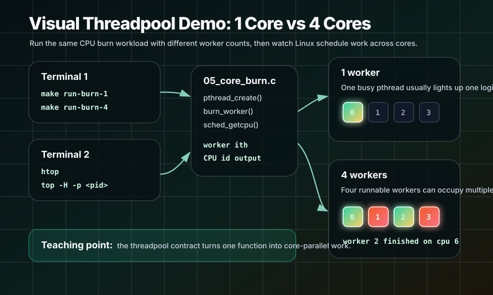

A small C curriculum: raw pthreads → runtime structures → persistent workers → reusable dispatch → dummy GEMV workload.
The Presentation Flow
The problem
Thread creation in the hot path can erase the benefit of a fast kernel.
The hook
The pthread API surface is small: create, join, mutex, condition variable.
The build
We assemble the runtime in five tiny C files instead of jumping to a large file.
The payoff
Compile each stage, run it, observe it, then connect it to GEMV/GEMM dispatch.
Why This Matters
Kernel
Computes math over pointers.
Threadpool
Owns work scheduling and barriers.
Runtime Contract
Keeps thread creation outside the hot path.
A CPU AI runtime needs the kernel and the dispatch contract.
Why Not Just Use OpenMP?
OpenMP fork/join
Easy to write, but every parallel region can pay scheduling, wakeup, and barrier overhead.
Threadpool dispatch
Create workers once, reuse them thousands of times, and send small kernel jobs quickly.
LLM decode loop:
token 0:
RMSNorm dispatch
QKV GEMM dispatch
attention dispatch
MLP GEMM dispatch
optimizer/training dispatch ...
If each small op forks a new team, overhead becomes the workload.
Live Coding Roadmap
01_pthreads_minimal.c — one raw worker thread.
02_structures.c — name the runtime state.
03_pool_create.c — create persistent workers.
04_dispatch_minimal.c — reusable dispatch and barrier.
man -k pthread man -k pthread_create man -k readdir
man 7 pthreads # overview page
man 3 pthread_create # glibc/Linux C function page
man 3posix pthread_create # POSIX function page, if installed there
man 3 pthread_join
man 3 pthread_mutex_lock
man 3 pthread_cond_wait
Pthread API Map
Thread identity
pthread_t opaque handle for one POSIX thread.
Create / join
pthread_create pthread_join start work, then wait for completion.
Coordination
pthread_mutex_t pthread_cond_t protect state and sleep until work arrives.
A threadpool is mostly these APIs assembled into a reusable runtime contract.
The loop matters: condition variables can wake spuriously.
The mutex protects the predicate; the condition variable only sleeps and wakes.
What Each File Proves
01
Can we start one thread, pass one argument, and join it?
02
Can we name the state a real threadpool must own?
03
Can workers live once and sleep instead of being recreated?
04
Can the same workers receive two dispatches and complete a barrier?
threadpool_demo.c connects the contract to row-partitioned compute.
1. Raw Pthreads
pthread_t thread;
int id = 1;
pthread_create(&thread, NULL, worker_main, &id);
printf("hello from main thread 0\n");
pthread_join(thread, NULL);
Create one worker, pass one argument, wait for completion.
Read the top comment: what this file proves, what to observe, why it matters.
Run Stage 1
make run-stage1
hello from main thread 0
hello from worker thread 1
2. Create The Structures
make run-stage2
typedef void (*work_fn_t)(int ith, int nth, void *arg);
typedef struct {
pthread_t *threads;
int nthreads;
pthread_mutex_t mu;
pthread_cond_t has_work;
pthread_cond_t done;
work_fn_t fn;
void *arg;
int generation;
int completed;
int stop;
} threadpool_t;
3. Create Workers Once
make run-stage3
for (int i = 1; i < nthreads; ++i) {
args[i - 1].pool = p;
args[i - 1].ith = i;
pthread_create(&threads[i - 1], NULL,
worker_main, &args[i - 1]);
}
Thread 0 is the main thread.
Workers are 1..nthreads-1.
4. Dispatch Logic
make run-stage4
p->fn = fn;
p->arg = arg;
p->completed = 0;
p->generation++;
pthread_cond_broadcast(&p->has_work);
fn(0, p->nthreads, arg); // main thread works too
Workers wake when generation changes.
Run Stage 4
make run-stage4
thread 0/4 received dispatch
thread 3/4 received dispatch
thread 2/4 received dispatch
thread 1/4 received dispatch
...
second dispatch reuses the same pool
5. Dummy GEMV Workload
make run-final
int r0 = (ith * rows) / nth;
int r1 = ((ith + 1) * rows) / nth;
for (int r = r0; r < r1; ++r) {
float sum = 0.0f;
for (int c = 0; c < cols; ++c)
sum += w[r * cols + c] * x[c];
out[r] = sum;
}
Final Demo
make run-final
dispatch 1: matrix-vector dummy workload
thread 0/4 owns rows [0, 3)
thread 1/4 owns rows [3, 6)
thread 2/4 owns rows [6, 9)
thread 3/4 owns rows [9, 12)
dispatch 2: same workers, same pool, no thread creation
From Demo GEMV To AI Kernels
Demo
matvec_work() splits output rows across workers.
Real runtime
GEMV/GEMM/RMSNorm/attention kernels split rows, tokens, heads, or tiles.
Same contract
fn(ith, nth, arg) gives every worker its worker id and total workers.
Same barrier
The caller waits until all worker-owned ranges finish.
How GEMM Dispatch Maps To Cores
// Runtime dispatch shape:
threadpool_dispatch(pool, gemm_work, &job);
// Worker range shape:
int row0 = (ith * M) / nth;
int row1 = ((ith + 1) * M) / nth;
// Each worker computes C[row0:row1, :]
For bigger kernels, the same idea becomes block/tile ownership instead of only row ownership.
Each operation becomes one or more threadpool dispatches.
Core ownership
Workers own rows, tokens, heads, blocks, or expert groups.
Runtime discipline
No hidden thread creation inside the kernel hot path.
Oversubscription
Good
One runnable worker per physical core, predictable affinity, enough work per dispatch.
Bad
Too many workers, nested OpenMP, allocator locks, cache-line fights.
More threads can make performance worse.
Show Cores In top
Terminal 1
make run-burn-1 make run-burn-4
Terminal 2
htop # or after PID prints: top -H -p <pid>
worker 0 finished on cpu 7 after ... iterations
worker 1 finished on cpu 3 after ... iterations
worker 2 finished on cpu 5 after ... iterations
worker 3 finished on cpu 1 after ... iterations
What The Demo Is Showing

Threadpool Design Rules
Create workers once; dispatch many times.
Keep the hot path allocation-free.
Use a generation counter so workers do not repeat stale work.
Make thread 0 participate instead of only coordinating.
Use half-open ranges like [r0, r1) so partitions are exact.